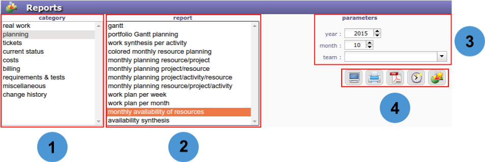
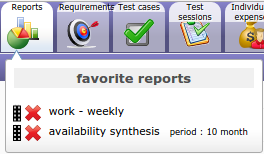
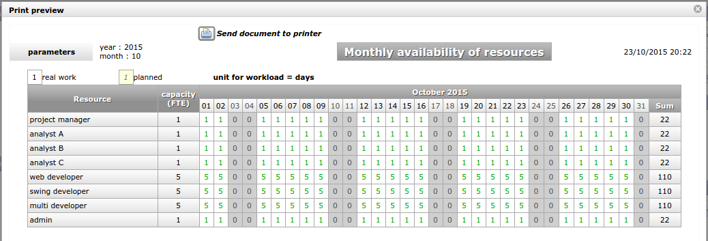

Reports¶
A list of reports is available in different categories.
- Select a category
 , report list
, report list  will update.
will update. - Select a report in the list, this will display specific parameters for the report.
- Update the parameters to get the information you need.
- Click on a button to produce the report.
{kind=link}
{kind=link}

Reports screen
Buttons
- Click on
 to display the report.
to display the report. - Click on
 to get a printable version of the report.
to get a printable version of the report. - Click on
 to export the report as PDF format.
to export the report as PDF format. - Click on
 to display this report on the Today screen.
to display this report on the Today screen. - Click on
 to define this report as favorite. This report will be available in your favorite reports list.
to define this report as favorite. This report will be available in your favorite reports list.
Favorite reports¶
Move your cursor over the reports menu icon (in the top bar) to show the popup menu that contains your favorite reports.

Popup menu management
- Allows to reorder reports displayed with drag & drop feature. Using the selector area button icon drag
 .
. - Click on
 to remove the report from the list.
to remove the report from the list.
Direct display
Select a report to display (in print mode), without leaving the current screen.
